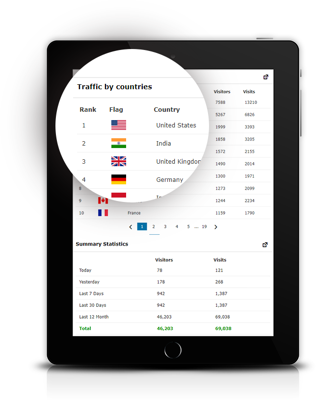
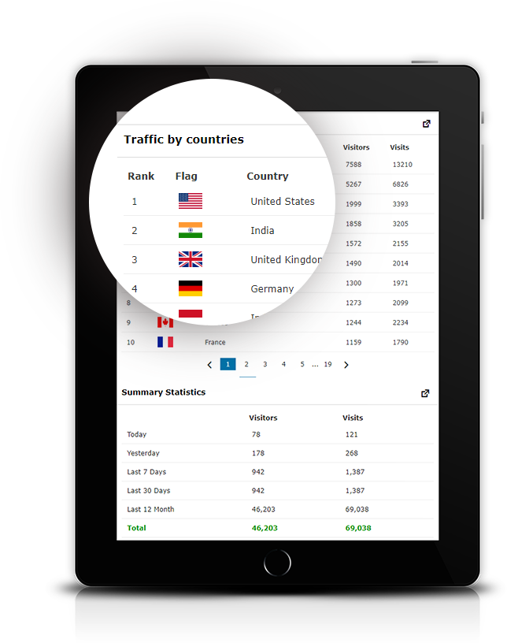

Visitor Traffic Real-Time Statistics pro is a smart and easy-to-use plugin for Word Press to display your site traffic statistics in detail with
excellent charts. It helps you to track your visitor numbers. page views, used browsers, operating systems, locations where your site is
opened, and much more. It works as standalone software that doesn't need any external service.
see search queries and redirects from popular
search eng ines like Google. Bing. DuckDuckGo
Yahoo, Yandex and Baidu
.png)


A report showing recent visits to your
site with IP address, country, city, and
time of visit.

Browsers statistics will help you to
see the most popular browser.

GeolP location by Country. City.
Browser. Toolbar. Languages.
Hardware info - Stats &Trends.


 

A report showing the number of visitors and
visits from each country. arranged in
descending.
order by the most visited countries.
Show the number of visitors and visits
for each topic and arrange the results
according to the number of visitors

Show the most important keywords
used in searches in search engines.
This report will show the number of
visitors distributed over the hours of
the day in addition to showing the
number of visitors and the number
of visits per hour.